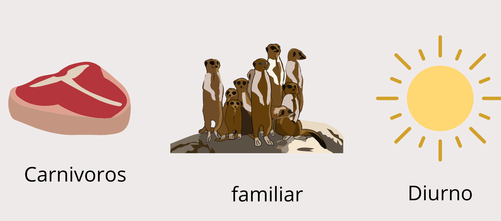

O mundo e os comportamentos dos suricatatas
Em média nascem entre duas e cinco crias que permanecem escondidas no abrigo nas primeiras semanas de vida.
estes seres são conhecidos por:

Os suricatas mantem uma alimentação a base de carnes mas tambem conseguem se alimentar de frutos.